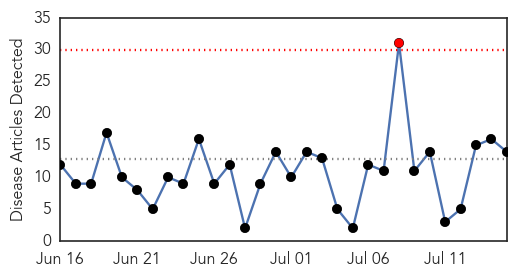
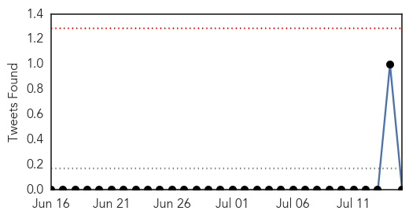

30 Day Trends
Web: 1 alerts, 0 warnings
Twitter: 0 alerts, 0 warnings
Top Articles:
- 0.988
- An extra month to get free influenza vaccines
- 0.987
- Flu stats jab at seasonal risk
- 0.983
- When Fido has the flu Canine influenza comes to Cobb vets recommend getting pets vaccinated
- 0.911
- Lt. Gov., public health officials urge HPV vaccine for youth ages 11, 12 – The Ohio County Monitor
- 0.799
- Pilgrims urged to take vaccinations before going to Mecca
- 0.766
- Child's 1918 grave hints at worldwide tragedy
- 0.751
- July 14, 2015 Archives
- 0.751
- July 14, 2015 Archives
- 0.751
- July 14, 2015 Archives
- 0.744
- Viruses, Not Bacteria, Reponsible for Many Pneumonia Cases
- 0.705
- Lancashire exports to Hong Kong hit by avian flu case
- 0.700
- Welsh farmers urged to be vigilant after English bird flu case
- 0.651
- WILL THE WORST BIRD FLU OUTBREAK IN U.S. HISTORY FINALLY MAKE US RECONSIDER FACTORY FARMING CHICKEN?
- 0.531
- Bird Flu Cost the US $3.3 Billion and Worse Could Be Coming – Phenomena
Top Tweets:
-
No tweets found for Jul 15, 2015
Web/News Articles
Tweets
Article Locations

Article Confidences